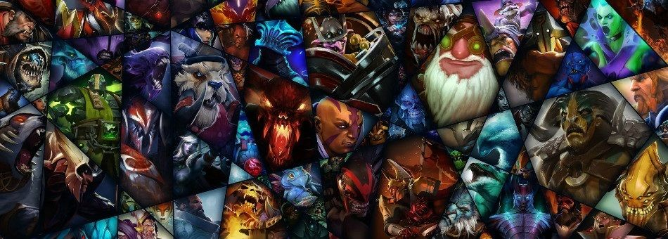

Дота 2 — знакомство с игрой
Стандартный матч в Доте 2 — это противостояние двух команд, Света и Тьмы. У каждой команды есть:
- 5 игроков;
- 1 трон;
- 3 линии (верхняя, средняя и нижняя), ведущие к трону;
- 12 башен (по 4 на каждой линии), которые бьют по противникам в радиусе действия;
- крипы — юниты, которые появляются периодически, движутся по линиям, атакуют врагов и постройки.
Цель игры — уничтожить все башни как минимум на одной линии и сломать вражеский трон.
Что нужно знать новому игроку
За разрушение строений, убийство крипов и вражеских героев дается опыт и золото. Опыт нужен для повышения
уровня и
изучения новых способностей. Золото — для покупки артефактов, которые дают преимущества.
- При первом входе в Dota 2, игроку предлагают пройти обучение. Не стоит им пренебрегать — там можно познакомиться с интерфейсом игры, узнать базовые понятия и особенности управления. Разобраться с этим по ходу реального матча невозможно — противники заметят и убьют «потерянного» игрока, а союзники выплеснут волну негодования.
- Если есть чувство неуверенности, можно сообщить об этом сокомандникам в чате — есть вероятность, что к ошибкам отнесутся с пониманием.
- Слаженная работа в команде может привести к победе, даже если противники сильнее. Обращать нужно внимание на важные сообщения в чате и сигналы на карте. Оповещать союзников о том, что враг ушел с линии, взял руну или купил какой-то предмет (в инвентарь противника можно заглянуть, кликнув на него, пока он в пределах видимости).
- Важно следить за мини-картой — ситуация на ней может непредсказуемо меняться и требовать быстрой реакции.
- Нужно трезво оценивать свои возможности и учиться на ошибках. Не стоит бросаться в толпу противников в одиночку, нужно избегать сражений под вражескими башнями, наблюдать за анимациями и уворачиваться от мощных атак.
- Пока игрок не освоил Дота 2 полностью (а на это может уйти много месяцев), не стоит пренебрегать гайдами по Dota 2 — в них опытные игроки делятся эффективными сборками и стратегией.
Это чистого вида «косметика», которая не дает никаких преимуществ в бою.
Полезная информация для новичка
В Dota 2 игроки могут общаться между собой при помощи чата и голосовых сообщений. Есть два чата: общий и для союзников (есть надпись «Союзникам»). Общение голосом доступно только между членами одной команды.
Игровые термины: как понять что говорит союзник
Для удобства игроки пользуются сленгом. Этот небольшой гайд по терминам в Dota 2 поможет разобраться в незнакомых словах:
- ассист — помощь в убийстве врага;
- байт — отвлечение внимания противника на себя;
- бафф — положительный эффект;
- баш, стан — оглушение;
- бот, низ — нижняя линия;
- ганк — стратегия, когда несколько героев объединяются, чтобы убить противника;
- ГГ, GG (good game) — хорошая игра, иногда означает, что исход игры ясен;
- денай — добивание союзных крипов, героев или сооружений, чтобы не дать противникам получить за них опыт и золото;
- инвиз — невидимость;
- кулдаун, КД — перезарядка умений или предметов;
Какого героя выбрать?
Разделение по ролям
Гайды по героям по Дота 2 учитывают, в первую очередь, роль, которую персонаж будет играть в матче:
- Фарм. Слабые в начале игры, но могут сыграть решающую роль в конце, когда соберут нужные предметы. Нуждаются в быстром получении опыта и золота (фарм крипов, помощь в убийствах). В этой роли играют за Луну, Снайпера, Анти-Мага.
- Быстрый урон (нюкер). Могут нанести много урона по одной или нескольким целям, чаще всего, с помощью активных умений. Это относится к Зевсу, Инвокеру, Лине.
- Контроль (дизэйбл). Способны вывести противника из строя обездвиживанием, оглушением или молчанием. Для этой роливыбирают Марса, Слардара, Дизраптора.
- Побег. Имеют способности, которые позволяют быстро и незаметно уйти с места сражения (например, невидимость, рывок или телепорт). С этой задачей хорошо справляются Ио, Рики, Пак.
- Инициация. Первыми атакуют вражеского героя, как правило, накладывают эффекты контроля и дают команде возможность добить цель. Это, к примеру, Акс, Алхимик, Войд.
- Поддержка. Создают союзникам условия для безопасного фарма, покупают предметы для помощи команде. Представители этой группы: Чен, Даззл, Трент Протектор.
- Стойкость (танк). Очень живучие герои, которые могут принять на себя основной урон в битве. К ним относятся, например, Бристлбек, Пудж, Хускар.
- Осада. Могут быстро разрушать вражеские постройки. Для этой цели можно выбрать Фантом Лансера, Лешрака, Фуриона.
- Лес. В начале игры получают опыт и золото не на линии, а в лесу. Немногие могут осилить такую сложную прокачку: Акс, Лайфстилер, Ликан.
Основные атрибуты
Впервые столкнувшись с выбором героя, новичок заметит, что они поделены на три группы. Ниже приведен краткий guide по Dota 2, посвященный этому разделению.
В игре есть три характеристики:
- Сила. Определяет количество и скорость регенерации здоровья.
- Ловкость. Повышает броню и скорость атаки.
- Интеллект. От него зависит объем маны и ее восстановление.
У каждого персонажа есть основной атрибут, по которому его определяют в категорию силачей, ловкачей или интовиков. Прирост основной характеристики, помимо общего эффекта, дает еще и увеличение урона от обычных атак.


Герои с основной характеристикой «сила» отличаются повышенной стойкостью и могут впитывать больше
урона,
чем остальные. К ним относятся, например: Марс, Свен, Пудж, Хускар, Акс, Алхимик.Ловкачи
обладают
высоким
уроном и скоростью обычных атак, поэтому могут успешно фармить крипов и убивать
членов вражеской
команды.
Потенциал этих персонажей полностью раскрывается в конце игры, когда куплены
необходимые артефакты. В
эту
группу входят: Снайпер, Урса, Луна, Фантом Лансер, Рики, Нюкс и другие.
Персонажи интеллекта, в основном,
типичные маги. Большой запас маны позволяет им делать упор на активные
умения, которые часто играют
решающую
роль в схватке. К классике этой категории относятся: Зевс, Витч
Доктор, Лина, Сайленсер, Даззл, Лион.
Начинающим лучше обратиться к гайдам на таких героев Дота 2:
- Хускар (Huskar);
- Свен (Sven);
- Баратрум (Spirit Breaker);
- Урса (Ursa);
- Снайпер (Sniper);
- Рики (Riki);
- Вайпер (Viper);
- Баунти Хантер (Bounty Hunter);
- Зевс (Zeus).
Руны в Dota 2
Гайд Дота 2 был бы неполным без информации о рунах. Это магические знаки, которые на короткое время дают
персонажу
те или иные преимущества.Чтобы получить особый эффект руны, ее нужно подобрать — кликнуть по ней, пока это
не
сделал кто-то другой (противник или союзник).Руна активируется сразу, если в инвентаре героя нет «банки»
(предмет Bottle).
Если бутыль есть, руна автоматически перемещается в него и активируется, когда герой
использует
Bottle.В «бутылке»
может храниться только один усилитель — при попытке взять две руны, первая
используется и
исчезнет. Если руну в Bottle
не применить в течение 2-х минут, она активируется самостоятельно.
Какие бывают руны:
- Волшебство. На 50 секунд снижает расход маны и время перезарядки способностей на 30 %.
- Двойной урон. 45 секунд герой наносит на 100 % больше урона от обычной атаки.
- Ускорение. В течение 22 секунд персонаж движется с максимальной скоростью.
- Невидимость. Герой исчезает с поля зрения противников на 45 секунд. Действие руны прекращается, если атаковать, использовать умение или предмет.
- Иллюзии. Создает 2 управляемые иллюзии персонажа, которые существуют 75 секунд или пока их
не уничтожат. Иллюзии наносят меньше урона, а
получают больше. Они могут атаковать, но не могут применять способности - Регенерация. В течение 30 секунд восстанавливает 6 % здоровья и маны в секунду.
Кроме рун, дающих особые эффекты, в игре есть руна богатства, которая дает дополнительное золото всем членам команды.
Так что опытный игрок даже без обзора может узнать, какую руну подобрал противник.
Где и когда появляются
Руны богатства появляются одновременно в 4 местах на карте в самом начале боя, а затем — каждые 5 минут.
Руны-усилители можно найти в одной из двух точек на реке на 4-й минуте матча, и далее — каждые 2
минуты.
После 40-й минуты эти руны появляются сразу в обеих точках.Если руну не забрали до появления
следующей, она
пропадет.Понимание игры приходит с опытом — не все получится сразу. Но не следует опускать
руки,
не нужно
обращать внимание на «токсичных» игроков. Изучение теории, и ее применение на практике
начнет
приводить к
победам, и скоро читатель сам станет автором Дота гайда.